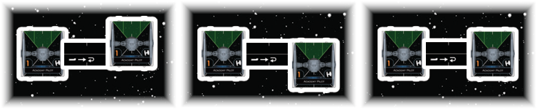
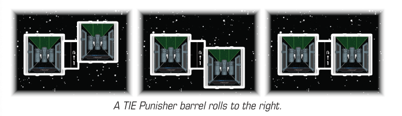

BARREL ROLL ()
Pilots can barrel roll to move their ship laterally and adjust their position. When a small ship performs a action, it barrel rolls by following these steps:
-
Take the [1 ] template.
-
Place the narrow edge of the template flush against the left or right side of the ship’s base. The template must be placed with the middle line of the template aligned with the hashmark on the side of the base.
-
Lift the ship off the play surface, then place the ship with the hashmark on the side of the base aligned to the front, middle, or back of the other narrow end of the template.
-
Return the template to the supply.

When a medium or large ship barrel rolls, substitute “long edge” for “narrow edge” in the above description.

-
When a player declares to barrel roll a ship, that player also declares whether the ship is barrel rolling to the left or right. Then, while attempting to place the ship, the player may attempt to place the ship at the front, middle, and back before choosing one of those positions.
-
While attempting to place a ship to complete a barrel roll, the barrel roll can fail if any of the following occurs:
-
All three positions would cause the ship to overlap another ship.
-
All three positions would cause the ship to overlap or move through an obstacle.
-
All three positions would cause the ship to be outside the play area (and therefore would cause that ship to flee).
-
-
If a barrel roll fails, the ship is returned to its prior position before it attempted the barrel roll. If this was part of a action, that action fails.
-
The player cannot choose to fail a barrel roll if one of the three positions would not cause the action to fail.
-
Performing a barrel roll does not count as executing a maneuver but does count as a move.
-
If an ability instructs a ship to barrel roll, this is different than performing a action. A ship that barrel rolls without performing the action can still perform the action this round.